También África existe en el fútbol.
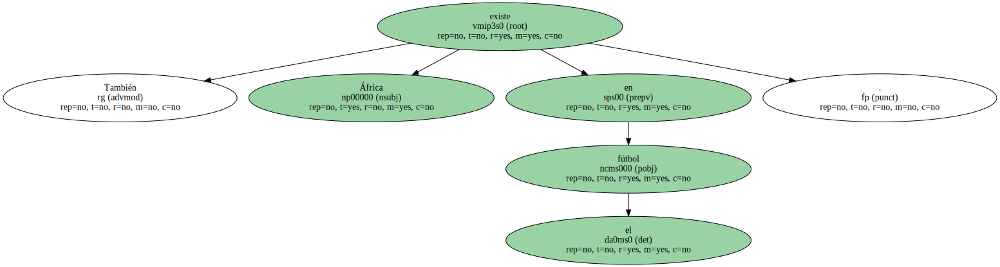Es cierto que ha tenido que viajar hasta Asia , hasta la otra punta del planeta , para reivindicar un lugar en el mundo , pero la hermosa , joven y cautivadora Senegal le concedió ayer la mayor alegría que se recuerda en mucho tiempo.
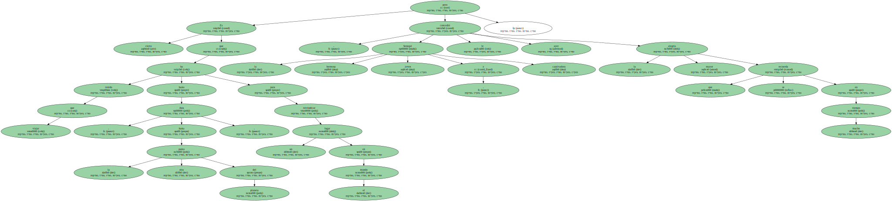Cuando el mundo había girado su vista hacia Seúl , en el primer día del Mundial más exótico jamás organizado , llegaron les lions de Bruno Metsu y desnudaron a Francia , asomándose de forma definitiva a la historia.
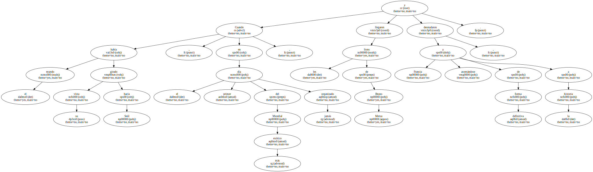Y luego , claro , bailaron locos de alegría por la gesta conseguida cuando el torneo abría sus puertas.
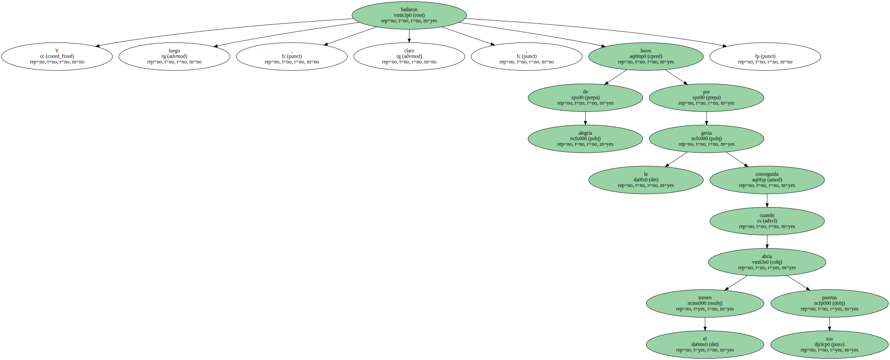Así como suena.
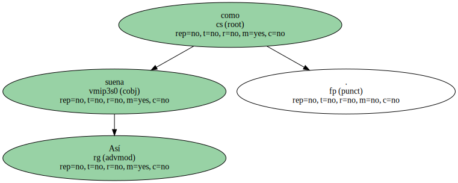En un santiamén , liderados por un joven cuyo nombre se hará familiar muy pronto ( El-Hadji Diouf ) , ridiculizaron al campeón y le recordaron que ya nada es lo que parece en el fútbol.

Menudo inicio.
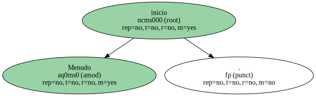Si la FIFA , convaleciente de una cruenta batalla interna , salpicada por la plaga de la corrupción , hubiera buscado un escenario mejor no lo habría encontrado.
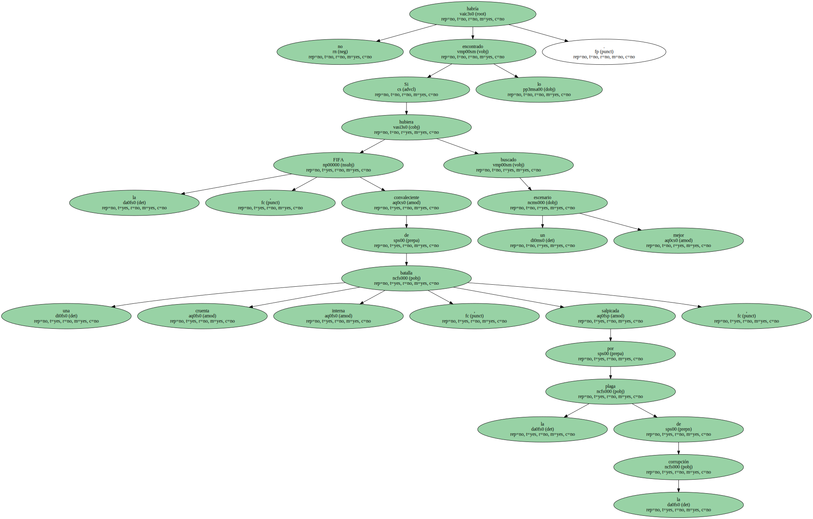Seguro.

LEMERRE RENDIDO.
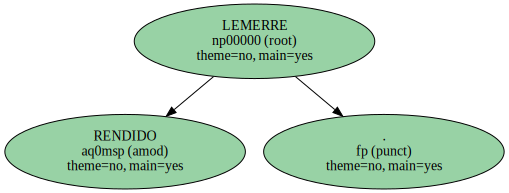Cuando todas las televisiones estaban conectadas con el inexplorado y desconocido mercado asiático , surgió la imparable pujanza de Senegal que encarna el crecimiento de África , un continente que se resiste a vivir eternamente en la pobreza.
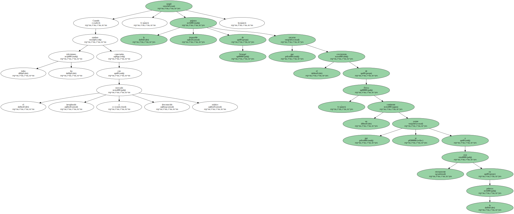Y menos , en el fútbol.
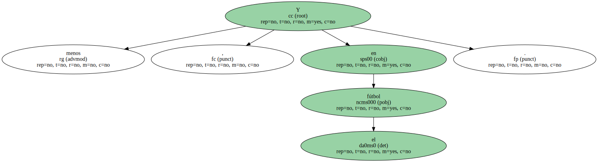Paso a paso , se asoma orgulloso a la élite , sin preguntar por quién tiene delante.
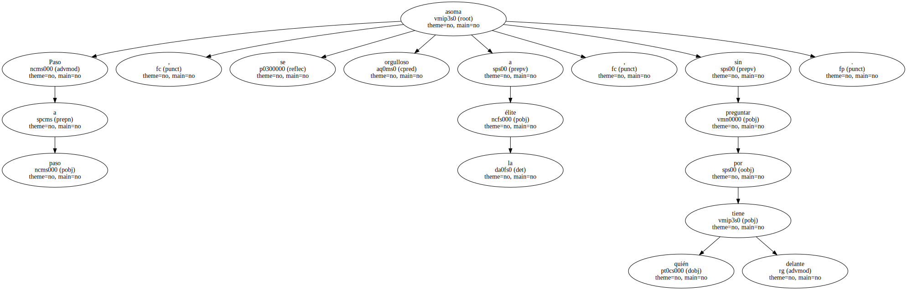" Ha jugado de forma extraordinaria , sensacional . Ha sido un gran Senegal " , dijo ayer un rendido y entregado Roger Lemerre , el técnico francés.
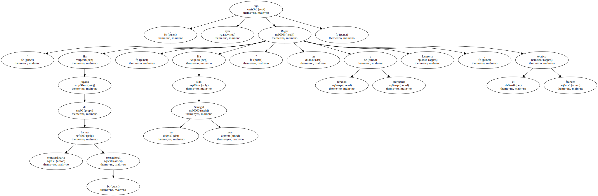" Claro que nos ha complicado el futuro porque era capital empezar con tres puntos " , añadió el técnico , que se mostró " tremendamente desolado ".
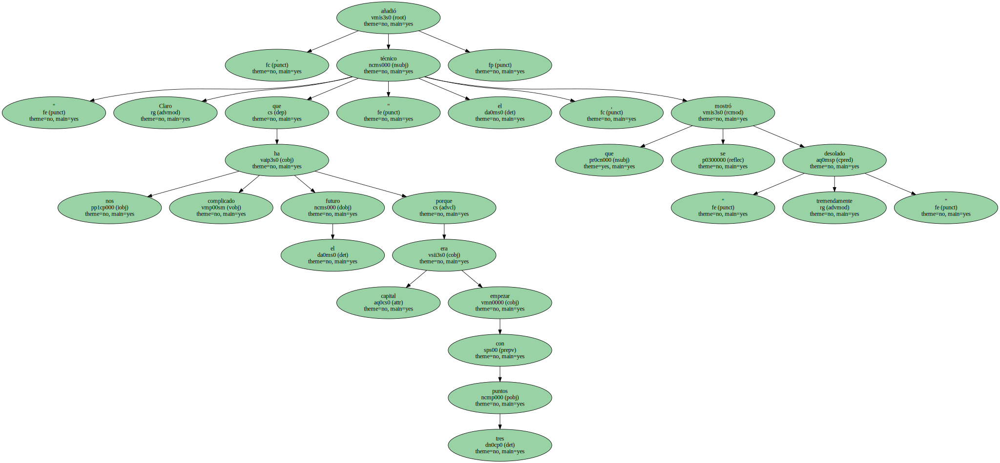UN PAÍS SIN RECURSOS.
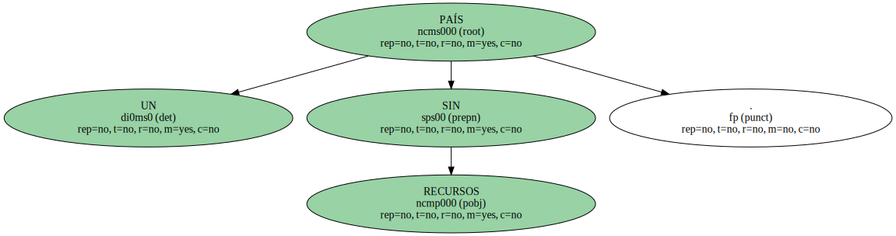Francia también estaba hundida porque su grandeur había caído por los suelos.
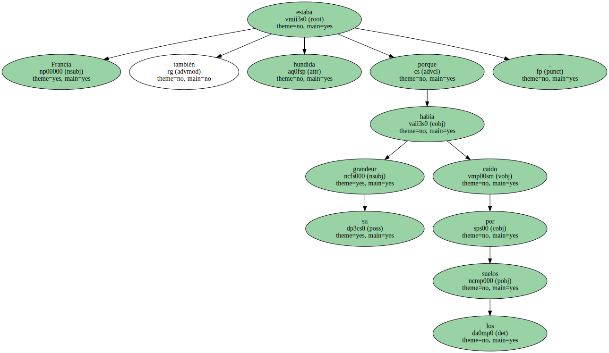Pensó que hay vida sin Zidane , pero Senegal se encargó de demostrarle que no es así.
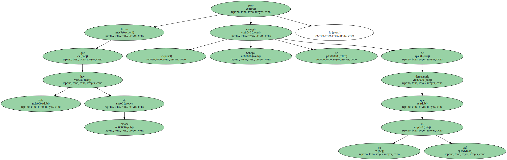Además , alzó la voz en el momento justo para recordar que el fútbol también ha llegado a África.

Tuvo que ser , curiosamente , en Seúl , la ciudad donde en 1988 lograra este país , de apenas nueve millones de habitantes , su primera medalla olímpica.
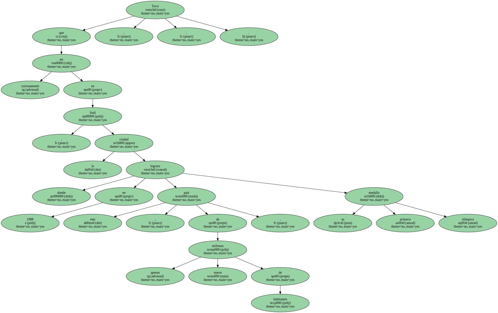Tuvo que ser en Seúl teniendo por testigos directos a 62.561 espectadores y millones y millones de personas esparcidas por el planeta.
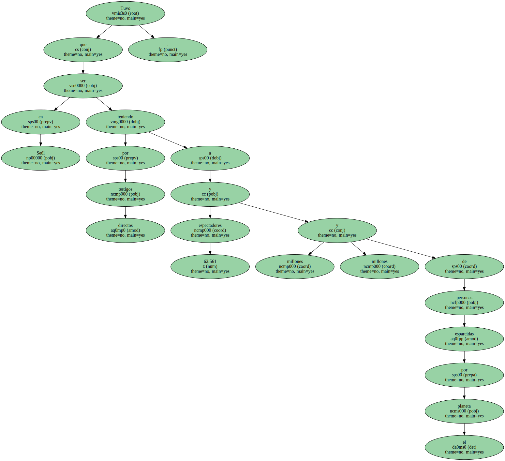Con Francia , el espejo del fútbol moderno e invencible , hecho añicos.
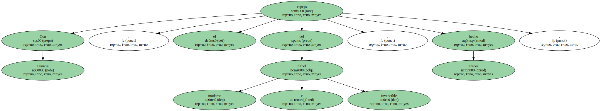Senegal , un lugar donde el fútbol carece de infraestructura ( sólo posee 5.000 licencias ) , pero dispone del capital más valioso.
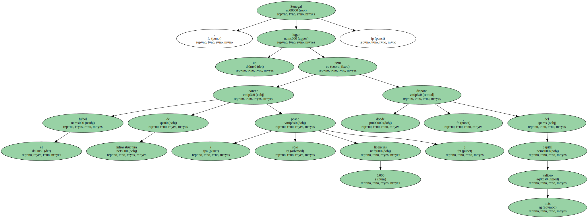Tiene un inagotable talento humano y no existe mayor tesoro.
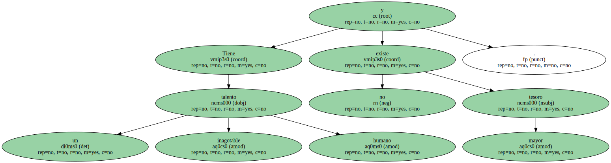" Este partido lo habíamos soñado , lo habíamos pensado y lo hemos conseguido . Es un gran premio para nuestro país y para los jugadores " , proclamó un emocionado Bruno Metsu , un anónimo técnico francés que ha ganado a Francia.

Un tipo que no tiene aspecto de estudioso del fútbol , más bien parece un bonvivant , pero que ha armado un Senegal competitivo.
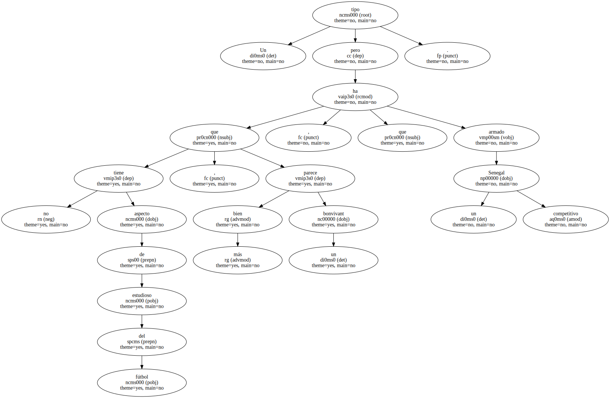Y sabe lo que quiere : jugar de forma sencilla.
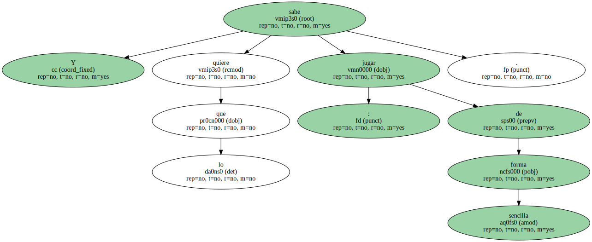" Estamos muy contentos de haber logrado esta increíble hazaña " , añadió Metsu , sin comprender aún la dimensión de esa victoria.
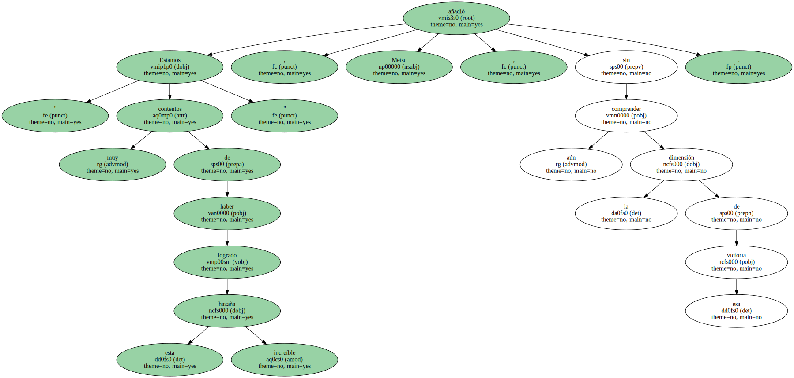